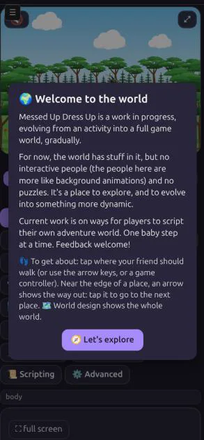
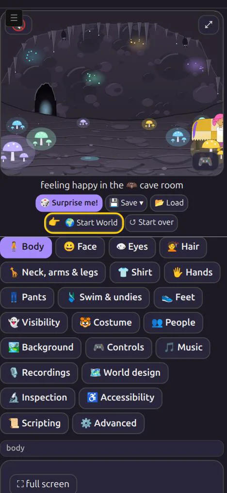

A Way In
A new player opens Messed Up Dress Up on a phone. How do they find the game's world, and know what to do once they are in it?
Short answers, for now. Until today they mostly didn't. The game opens as the dress-up activity it started as: a friend on a blank card, and 22 tabs below it. The world is in one of those tabs, 🗺️ World design, and nothing points there.
The first step, in 0.0.433: a 🌍 Start World button under the picture, with a pointing hand 👉 bobbing on it. It takes the friend to the start of the world, then a welcome card says what the game is for now and how to get about.
This report will grow as the new-player experience does. Each step gets a dated section, and earlier sections are kept as written.
How this started
A friend of Matthew's (call him R) tried the game on his phone. He got confused about how to enter the world and how to do anything once there. Matthew's summary: "It's not obvious at all at the moment."
Looking at the game as R found it, that is fair:
- It opens on no place at all. A first visit, or ↺ Start over, puts the friend on a plain card (the background
none). The world, 31 places on a 6 by 7 grid, from the deep sea to the castle, is all there, but the opening screen never mentions it. - The way in is a tab among 22. On a phone, the controls sit under the picture: Body, Face, Eyes, Hair and so on, then 🗺️ World design near the end. Its grid of squares is how a player enters the world, by tapping a square. Nothing says so until that tab is open.
- Getting about isn't announced. Tapping in the picture walks the friend there (on by default). An arrow out of a place appears only when the friend is near that edge. Both work well once known, but neither is taught.
- What the game is isn't said. The world has places and things to explore, but no people to talk to and no puzzles yet. A player looking for a goal finds none and can't tell whether they have missed it.
Step 1: 🌍 Start World (0.0.433, 2026-10-25, ^ticket(611))
From Matthew's notes on ^ticket(611): next to ↺ Start over, a button that
- picks the start square of the world called "start", if there is one (the game's own first world has one, a forest clearing);
- puts the friend there, as a tap on that square in 🗺️ World design does;
- and shows a pop-up saying what the game is now.
He then added one more element, after R's visit: emphasize that button "with something hovering over it (like a 'hand pointing') emoji, floating on it. Like an in-game tutorial might have."



What it does, exactly
| Piece | Behaviour |
|---|---|
| The button | Goes to the world named start, or the first world if none has that name, at its start square. If that world isn't the one the friend is in, the game switches worlds the usual way, keeping the square left behind. Without a start square, only the welcome shows. |
| The hand 👉 | Bobs on the button, with a yellow ring, until the button is pressed once on this device (kept in the browser, dress-up-world-started). It is a CSS animation of one emoji, so it costs next to nothing. If the device asks for reduced motion, it holds still. |
| The welcome | A card over the game, in Matthew's words (below). 🧭 Let's explore, Escape, or a tap outside the card closes it. It shows after every press of the button, not only the first. |
| Saves | Nothing new is saved in the friend: Start World changes where the friend is, as a tap on a square in 🗺️ World design does. |
The welcome's words
🌍 Welcome to the world
Messed Up Dress Up is a work in progress, evolving from an activity into a full game world, gradually.
For now, the world has stuff in it, but no interactive people (the people here are more like background animations) and no puzzles. It's a place to explore, and to evolve into something more dynamic.
Current work is on ways for players to script their own adventure world. One baby step at a time. Feedback welcome!
👣 To get about: tap where your friend should walk (or use the arrow keys, or a game controller). Near the edge of a place, an arrow shows the way out: tap it to go to the next place. 🗺️ World design shows the whole world.
The first three paragraphs are Matthew's, lightly joined. "No interactive people" is his correction to an earlier "no people": the world has people, but they are background animations, not quite characters you can interact with. The last paragraph is new, aimed at what confused R.
Not done yet: ideas for the next steps
None of these is decided. They are listed so the next step can be picked deliberately.
- A second tutorial step. After the welcome closes, move the hand to the nearest way-out arrow, or to a spot in the picture to tap, so the first walk is shown rather than described.
- Open in the world. Should a first visit start at the start square, with the dress-up card one tap away instead of the other way round? That would change what the game is first, so it is Matthew's call.
- Where am I. A small map in the corner of the picture, showing the current square in the world.
- Feedback, where? The welcome says "Feedback welcome!" but gives no way to send any. It could link to a place for that (the game sends nothing anywhere today, and that should stay true).
- A phone check. Hand the phone to someone new, as R did, and write down where they stop. That is the test this report should report on next.
Updates
2026-10-25: first draft. Step 1 shipped in Dress Up 0.0.433. Pictures from the game at 390 × 844 in the dark theme.